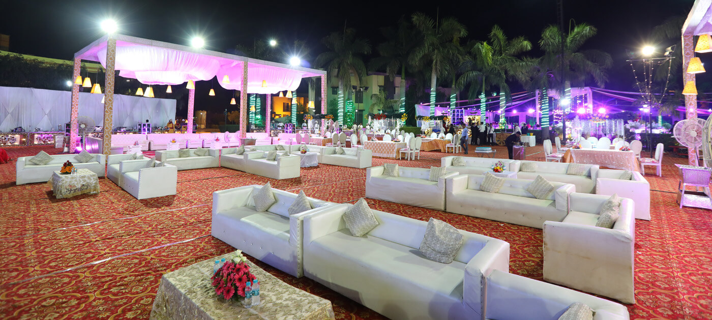
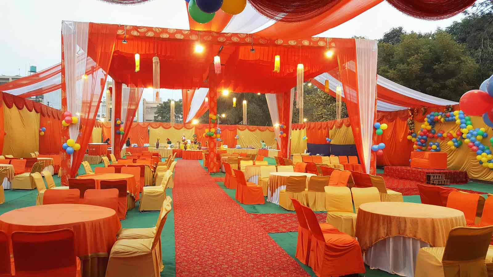
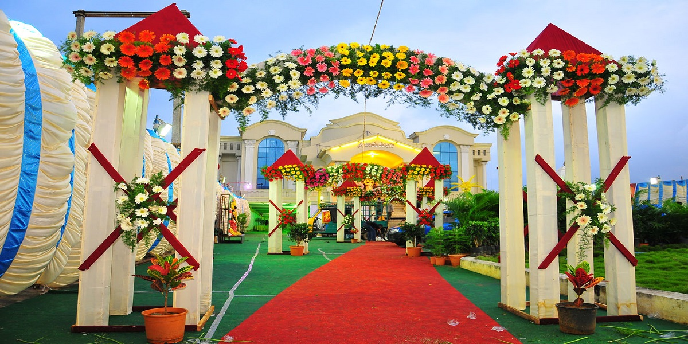

<section class="relative hero-top-section">
  <div class="grid grid-cols-1">
    <div>
      <!-- Carousel -->
      <div id="default-carousel" class="relative w-full" data-carousel="slide" data-carousel-interval="6000">
        
        <!-- Carousel wrapper -->
       <div class="relative overflow-hidden h-[50vh] md:h-[31rem]">
          <!-- First Item (active) -->
          <div class="duration-700 ease-in-out" data-carousel-item="active">
            
          </div>
          <!-- Second Item -->
          <div class="hidden duration-700 ease-in-out" data-carousel-item>
            
          </div>
          <!-- Third Item -->
          <div class="hidden duration-700 ease-in-out" data-carousel-item>
            
          </div>
        </div>

        <!-- Slider indicators (dots) -->
        <div class="absolute z-30 flex -translate-x-1/2 bottom-5 left-1/2 space-x-3">
          <button type="button" class="w-3 h-3 rounded-full bg-white" aria-current="true" aria-label="Slide 1" data-carousel-slide-to="0"></button>
          <button type="button" class="w-3 h-3 rounded-full bg-white/50 hover:bg-white" aria-label="Slide 2" data-carousel-slide-to="1"></button>
          <button type="button" class="w-3 h-3 rounded-full bg-white/50 hover:bg-white" aria-label="Slide 3" data-carousel-slide-to="2"></button>
        </div>

        <!-- Slider controls -->
        <button type="button" class="absolute top-0 left-0 z-30 flex items-center justify-center h-full px-4 cursor-pointer group" data-carousel-prev>
          <span class="inline-flex items-center justify-center w-10 h-10 rounded-full bg-black/50 group-hover:bg-black">
            <svg class="w-4 h-4 text-white" fill="none" stroke="currentColor" stroke-width="2" viewBox="0 0 24 24">
              <path stroke-linecap="round" stroke-linejoin="round" d="M15 19l-7-7 7-7"></path>
            </svg>
          </span>
        </button>
        <button type="button" class="absolute top-0 right-0 z-30 flex items-center justify-center h-full px-4 cursor-pointer group" data-carousel-next>
          <span class="inline-flex items-center justify-center w-10 h-10 rounded-full bg-black/50 group-hover:bg-black">
            <svg class="w-4 h-4 text-white" fill="none" stroke="currentColor" stroke-width="2" viewBox="0 0 24 24">
              <path stroke-linecap="round" stroke-linejoin="round" d="M9 5l7 7-7 7"></path>
            </svg>
          </span>
        </button>
      </div>
    </div>
  </div>
</section>
